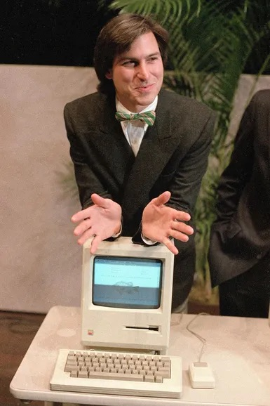

01 / 09
Apple
Steve Jobs
The biggest influence on me, and the reason I love Apple. He made me believe that how something feels matters as much as whether it works, and that one person with taste and stubbornness can change what everyone else thinks is possible.
